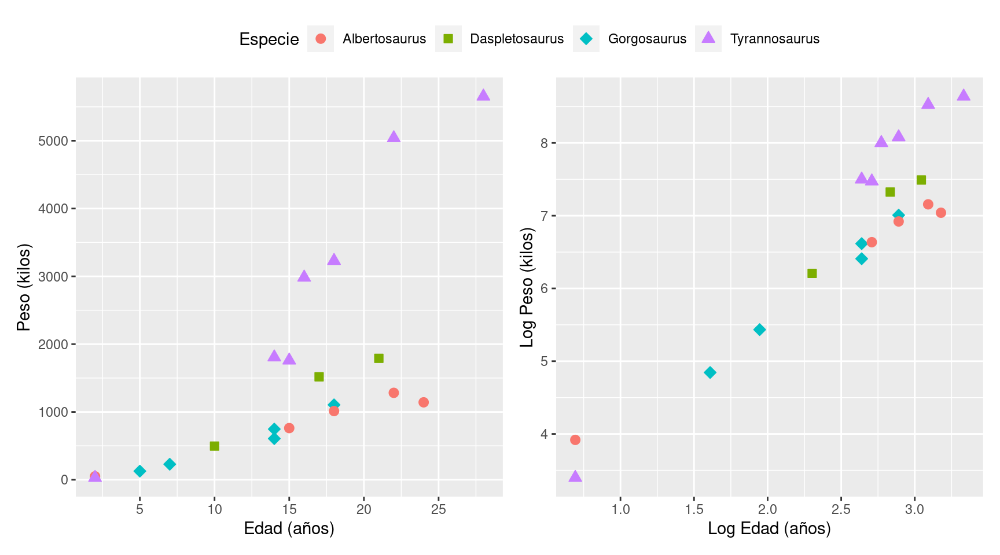

library(babynames)
dat <- babynames
dat <- dat[dat$name == "Sophia" & dat$sex == "F" & dat$year > 1950, ]
yr <- dat$year
p <- dat$prop
t <- dat$year - 1950
Y <- log(p / (1 - p))Práctica - Unidad 5
Modelos de regresión avanzados
En esta última unidad de la práctica se presentan ejercicios que requieren el desarrollo de modelos de regresión con un nivdel de complejidad mayor. La distribución condicional de la respuesta ya no es necesariamente normal y la forma del predictor de la media incluye características que lo diferencian de un predictor lineal simple. Además, esta unidad presenta ejercicios con modelos jerárquicos.
📌 Regresión Poisson
Considere el siguiente modelo para datos de conteo con un predictor \(X\) que toma valores entre -3 y 50:
\[ \begin{aligned} Y_i &\sim \mathrm{Poisson}(\lambda_i) \\ \log(\lambda_i) &= \beta X \\ \end{aligned} \]
- Genere 1000 valores de \(X\), asuma un valor conocido (y fijo) para \(\beta\), simule los correspondientes valores de \(\lambda_i\) y los de \(Y_i\). ¿Cómo es \(\lambda\) en función de \(X\)? ¿Es lineal la relación entre \(X\) e \(Y\)? ¿Qué ocurre con la varianza de \(Y\) en función de \(X\)? ¿Cómo es la distribución marginal de \(Y\)?
- Ahora añada incertidumbre al valor de \(\beta\) (¿cómo se hace esto?) y simule nuevamente valores para \(\lambda_i\) y \(Y_i\). Compare los resultados.
📌 Regresión logística
Considere el siguiente modelo de clasificación con un predictor \(X\) que toma valores entre -30 y 10:
\[ \begin{aligned} Y_i &\sim \mathrm{Bernoulli}(\theta_i) \\ \log\left(\frac{\theta_i}{1 - \theta_i}\right) &= \beta X \\ \end{aligned} \]
- Genere 1000 valores de \(X\), asuma un valor conocido (y fijo) para \(\beta\), simule los correspondientes valores de \(\theta_i\) y los de \(Y_i\). ¿Cómo es \(\theta\) en función de \(X\)? ¿Es lineal la relación entre \(X\) e \(Y\)?
- Ahora añada incertidumbre al valor de \(\beta\) (¿cómo se hace esto?) y simule nuevamente valores para \(\theta_i\) y \(Y_i\). Compare los resultados.
📌 Intención de voto
El conjunto de datos
elecciones.csvcontiene los resultados de un estudio piloto sobre intención de voto. Contiene las variablesvoto,edadypartidoque indican respectivamente el candidato elegido, la edad y la afinidad partidaria del encuestado.Utilice un modelo de regresión logística para responder a las siguiente preguntas de investigación:
- ¿Cómo se relaciona la edad de los encuestados con la intención de voto?
- ¿Es esta relación diferente para las diferentes afinidades partidarias?
📌 Días de ausencia
Un organismo público de un Estado de los Estados Unidos está intereaso en estudiar el comportamiento de la asistencia de los estudiantes de secundaria. Para eso se cuenta con datos de 314 estudiantes tercer año en
students.csv. Los predictores del número de días de ausencia incluyen el tipo de programa en el que está inscrito el estudiante y una prueba estandarizada de matemáticas.Las variables de interés en el conjunto de datos son:
daysabs: El número de días de ausencia. Es nuestra variable de respuesta.progr: El tipo de programa. Puede ser uno de los siguientes:"General","Academic"o"Vocational".math: Puntuación en una prueba de matemáticas estandarizada.
Interesa evaluar la asociación entre el tipo de programa y la puntuación en la prueba con los días de ausencia. También se desea ver ver si la asociación entre el puntaje en la prueba y los días de ausencia es diferente en cada tipo de programa.
Realice un análisis exploratorio de los datos y elabore un modelo de regresión Poisson que permita explicar la asociación entre las variables predictoras y la cantidad de días que se ausentan los estudiantes.
📌 Baseball
El béisbol es uno de los deportes donde se más intensivamente se utilizan herramientas estadísticas y analíticas. La cantidad de métricas que se calculan para los jugadores es muy elevada. Supongamos que estamos en un equipo de béisbol y nos gustaría cuantificar el rendimiento de los jugadores, siendo una de las métricas su promedio de bateo (definido por la cantidad de veces que un bateador golpea una pelota lanzada, dividido por el número de veces que se presenta al bate) ¿Cómo podríamos utilizar la estadística bayesiana para resolver este problema?
La tabla
battinges una compilación de datos históricos de béisbol realizada por el Baseball Databank. Entre otras, contiene las siguientes columnas de interés:playerID: Identificación del jugadorAB: Cantidad de veces que el jugador se presenta al bateH: Cantidad de veces que el jugador golpea la pelota al batearbatting_avg: El cociente entreHyAB
Proponga un modelo de regresión logística para estimar la probabilidad de bateo para cada jugador. Incorpore la identificación del jugador en el modelo. Considere primero un modelo no jerárquico y luego un modelo jerárquico.
📌 Privados del sueño
El conjunto de datos
sleepstudycontiene el tiempo de reacción promedio en una serie de pruebas para un grupo de participantes en un estudio de privación del sueño. Los primeros dos días del estudio se consideran de adaptación y entrenamiento, el tercer día es una línea de base y la privación del sueño comienza después del día 3. Los sujetos de este grupo estaban restringidos a 3 horas de sueño por noche. El objetivo era analizar cómo la falta de sueño afectaba la capacidad de respuesta y la precisión en dicha tarea.La variable de respuesta es
"Reaction", que representa el promedio de las mediciones de tiempo de reacción de los participantes en un día determinado (en milisegundos). Las dos covariables son"Days", que indica el número de días de privación del sueño, y"Subject", que es el identificador del participante sobre el cual se realizó la medición.Se propone utilizar un modelo de regresión lineal de la forma:
\[ \begin{aligned} \text{Reaction}_i & \sim \text{Normal}(\mu_i, \sigma) \\ \mu_i & = \beta_0 + \beta_1\text{Days}_i \\ \end{aligned} \]
Considerando a los sujetos como grupos, evalúe las siguientes alternativas para estimar el intercepto y la pendiente:
- Complete pooling
- No pooling
- Partial pooling
📌 Modelo lineal para elecciones en Estados Unidos
Utilice el conjunto de datos de las elecciones presidenciales de Estados Unidos del año 2016 que se provee en Reich y Ghosh (2019) (
rep_2012_2016). Elabore un modelo de regresión lineal bayesiano donde la variable respuesta es la diferencia porcentual entre el porcentaje de votos que obtuvo el candidato Republicano en el 2016 versus los que tuvo en el 2012 en cada condado y utilice todas las demás variables como predictoras.- Utilice distribuciones a priori normales no informativas. Interprete las distribuciones a posteriori marginales de los coeficientes de regresión.
- Calcule los residuos \(\boldsymbol{r} = \boldsymbol{y} - \boldsymbol{X}\hat{\boldsymbol{\beta}}\) donde \(\hat{\boldsymbol{\beta}}\) es la media a posteriori del vector de coeficientes de regresión ¿Puede concluir que los residuos siguen una distribución normal? ¿Qué condados presentan los residuos más grandes y más pequeños? ¿Qué puede indicar sobre estos condados?
Control de armas
Utilice el conjunto de datos sobre el control de armas en Estados Unidos. Estos datos provienen de un estudio transversal. Para el estado \(i\), sea \(Y_i\) el numero de homicidios y \(N_i\) el tamaño de la población.
- Ajuste el modelo \(Y_i \mid \boldsymbol{\beta} \sim \text{Poisson}(N_i\lambda_i)\) donde \(\text{log}(\lambda_i) = \boldsymbol{X}_i\boldsymbol{\beta}\). Use distribuciones a priori no informativas y \(p = 7\) de las covariables en \(\boldsymbol{X}_i\): el intercepto, los cinco confounders \(\boldsymbol{Z}_i\), y el número de leyes relacionadas a armas. Justifique que el sampler ha convergido y explorado suficientemente la distribución a posteriori y resuma la distribución a posteriori de \(\boldsymbol{\beta}\).
🧩 ¿A cuántas Sofías conoces?
Descargue el conjunto de datos
babynamesenRy calcule el log-odds de un bebé llamado “Sophia” en cada año luego de 1950.Sea \(Y_t\) el log-odds muestral en el año \(t + 1950\). Ajuste el siguiente modelo auto-regresivo de orden 1:
\[ \begin{aligned} Y_t &= \mu_t + \rho(Y_{t - 1} + \mu_{t - 1}) + \varepsilon_t \\ \mu_t &= \alpha + \beta t \\ \varepsilon &\underset{iid}{\sim} \text{Normal}(0, \sigma^2) \\ \alpha, \beta &\sim \text{Normal}(0, 100^2) \\ \rho &\sim \text{Uniforme}(-1, 1) \\ \sigma^2 &\sim \text{InvGamma}(0.1, 0.1) \end{aligned} \]
- Interprete los parámetros del modelo (\(\alpha\), \(\beta\), \(\rho\) y \(\sigma^2\))
- Ajuste el modelo utilizando
{RStan}para \(t > 1\). Verifique la convergencia y reporte la media a posteriori e intervalos del 95% para los parámetros. - Grafique la distribución predictiva a posteriori para \(Y_t\) en el año 2020.
🧩 Meta-análisis
En este ejercicio se llevará a cabo un meta-análisis, es decir, un análisis que combina el resultado de varios estudios. Los datos provienen del paquete
{rmeta}enR.library(rmeta) data(cochrane) cochranename ev.trt n.trt ev.ctrl n.ctrl 1 Auckland 36 532 60 538 2 Block 1 69 5 61 3 Doran 4 81 11 63 4 Gamsu 14 131 20 137 5 Morrison 3 67 7 59 6 Papageorgiou 1 71 7 75 7 Tauesch 8 56 10 71Los datos provienen de siete ensayos aleatorizados que evalúan el efecto de la terapia con corticosteroides en la muerte neonatal. Para el ensayo \(i \in \{1, \dots, 7 \}\) \(Y_{i0}\) representa el número de eventos que ocurren en el grupo de control de tamaño \(N_{i0}\) y \(Y_{i1}\) representa el número de eventos que ocurren en el grupo tratado de tamaño \(N_{i1}\).
- Ajuste el modelo \(Y_{ij} \mid \theta_j \underset{indep}{\sim} \text{Binomial}(N_{ij}, \theta_j)\) con \(\theta_0, \theta_1 \sim \text{Uniforme}(0, 1)\). ¿Se puede concluir que el tratamiento está asociado a una reducción de la tasa de muerte?
- Ajuste el modelo \(Y_{ij} \mid \theta_j \underset{indep}{\sim} \text{Binomial}(N_{ij}, \theta_j)\) con
- \(\text{logit}(\theta_{ij}) = \alpha_{ij}\)
- \(\boldsymbol{\alpha}_i = (\alpha_{i0}, \alpha_{i1})^T \underset{iid}{\sim} \text{Normal}(\boldsymbol{\mu}, \boldsymbol{\Sigma})\)
- \(\boldsymbol{\mu} \sim \text{Normal}(0, 10^2I_2)\)
- \(\boldsymbol{\Sigma} \sim \text{InvWishart}(3, I_2)\)
- Dibuje un DAG para ambos modelos.
- Discuta las ventajas y desventajas de ambos modelos.
- ¿Cuál modelo es el preferido para estos datos?
Comparando modelos normales
Utilice el conjuto de datos
airqualityque viene con el paquete{datasets}que se carga automáticamente al crear una sesión deR.head(airquality)Ozone Solar.R Wind Temp Month Day 1 41 190 7.4 67 5 1 2 36 118 8.0 72 5 2 3 12 149 12.6 74 5 3 4 18 313 11.5 62 5 4 5 NA NA 14.3 56 5 5 6 28 NA 14.9 66 5 6Compare los siguientes modelos utilizando 5-fold cross-validation:
\[ \begin{array}{l} \mathcal{M}_1: \text{Ozone}_i \sim \text{Normal}(\beta_1 + \beta_2 \text{Solar.R}_i, \sigma^2) \\ \mathcal{M}_2: \text{Ozone}_i \sim \text{Normal}(\beta_1 + \beta_2 \text{Solar.R}_i + \beta_3 \text{Temp}_i + \beta_4 \text{Wind}_i, \sigma^2) \end{array} \]
Elija priors para los parámetros de ambos modelos explicando su elección.
🧩 Curvas de crecimiento de tiranosáuridos
Se analizan datos de 20 fósiles de tiranosáuridos para estimar las curvas de crecimiento de cuatro especies: Albertosaurio, Daspletosaurio, Gorgosaurio y Tiranosaurio. Los datos se toman de la Tabla 1 de Erickson et al. (2004) y se muestran en la Figura 1. El objetivo es determinar la curva de crecimiento, esto es, determinar el peso esperado por edad para todas las especies.
En el panel izquierdo de la Figura 1 se puede observar que hay una relación no lineal entre la edad y el peso. También se observan ciertos patrones comunes a las especies. Por ejemplo, la relación positiva entre las variables o el decrecimiento en la tasa de cambio conforme la edad es mayor.
Figura 1: (Izquierda) Edad (años) vs Peso (kilogramos). (Derecha) Los mismos datos luego de aplicar la transformación logarítmica a ambas variables. Sea \(Y_{ij}\) el peso y \(X_{ij}\) y la edad de la muestra \(i\) de la especie \(j\), con \(j = 1, 2, 3, 4\). Se propone el siguiente modelo:
\[ Y_{ij} = f_j(X_{ij}) \epsilon_{ij} \]
donde \(f_j\) es la verdadera curva de crecimiento para la especie \(j\) y \(\epsilon_{ij} > 0\) es un error multiplicativo.
- ¿Por qué tiene sentido proponer un error multiplicativo?
- ¿Cuál es un valor sensato para la media de la distribución del error?
- Utilice una distribución log-normal para el error, \(\log (\epsilon_{ij}) \sim \text{Normal}\). Proponga valores para la media y la varianza de forma tal que satisfagan la condición del punto anterior.
Esto da lugar un al siguiente modelo log-normal para \(Y_{ij}\):
\[ \log (Y_{ij}) \sim \text{Normal} (\log [f_j(X_{ij})] + \mu_{\log \epsilon}, \sigma^2_{\log \epsilon}) \]
con \(\mathbb{E}(Y_{ij}) = f_j(X_{ij})\).
A continuación se proponen cuatro modelos que varían según la relación funcional que se propone para \(f_j\) y la naturaleza de las distribuciones a priori que se utilizan.
Modelo 1
Observando el panel derecho de la Figura 1 se puede concluir que luego de transformar ambas variables con la función logaritmo la relación se ve aproximadamente lineal. Por lo tanto, se propone el siguiente modelo log-lineal:
\[ \log [f_j(X)] = a_j + b_j \log(X) \]
donde \(a_j\) y \(b_j\) representan al intercepto y pendiente de la especie \(j\). La curva de crecimiento en la escala original resulta \(f_j(X) = \exp (a_j)X^{b_j}\). Considere los siguientes priors:
\[ \begin{aligned} a_j &\sim \text{Normal}(0, 10) \\ b_j &\sim \text{Normal}(0, 10) \\ \sigma^2_j &\sim \text{InvGamma}(0.1, 0.1) \end{aligned} \]
- Escriba un programa en Stan que implemente el modelo y obtenga el posterior con
{RStan}. - Analice los coeficientes del modelo y las curvas de crecimiento. Realice gráficos que permitan observar la curva ajustada y su incertidumbre para cada especie.
Modelo 2
Este modelo es el mismo que el Modelo 1, excepto que las especies tienen la misma varianza, \(\sigma^2_j = \sigma^2\) y los coeficientes de regresión son modelados de manera jerárquica. Utilice los siguientes priors:
\[ \begin{aligned} \mu_a &\sim \text{Normal}(0, 10) \\ \sigma_a &\sim \text{InvGamma}(0.1, 0.1) \\ \mu_b &\sim \text{Normal}(0, 10) \\ \sigma_b &\sim \text{InvGamma}(0.1, 0.1) \\ a_j &\sim \text{Normal}(\mu_a, \sigma^2_a) \\ b_j &\sim \text{Normal}(\mu_b, \sigma^2_b) \\ \sigma^2 &\sim \text{InvGamma}(0.1, 0.1) \end{aligned} \]
- Escriba un programa en Stan que implemente el modelo y obtenga el posterior con
{RStan}. - Analice los coeficientes del modelo y las curvas de crecimiento. Genere gráficos similares a los producidos en el punto anterior. Describa similitudes y diferencias respecto del modelo 1. Justifique su respuesta.
- ¿Qué problemas detecta los modelos 1 y 2? Considere como evoluciona el peso conforme la edad según el modelo.
Modelo 3
Como alternativa al componente log-lineal anterior, se propone la siguiente curva de crecimiento logístico:
\[ f_j(X) = a_j + b_j \frac{\exp [d_j (\log(X) - c_j)]}{1 + \exp [d_j(\log(X) - c_j)]} \]
Este modelo tiene cuatro parámetros:
- \(a_j\) es el peso esperado cuando la edad es 0;
- \(b_j\) es el peso máximo esperado (o la cota superior del peso);
- \(\log (c_j)\) es la edad a la que la especie \(j\) alcanza la mitad del peso máximo;
- \(d_j > 0\) determina la tasa de crecimiento del peso conforme aumenta la edad.
Para que la curva sea positiva y creciente para todas las edades, se debe cumplir que \(a_j > 0\), \(b_j > a_j\) y \(d_j > 0\). Se pueden satisfacer estas restricciones expresando los parámetros en función de parámetros cuyo dominio es \(\mathbb{R}\):
- \(a_j = \exp (\alpha_{j1})\);
- \(b_j = \exp (\alpha_{j2})\);
- \(c_j = \alpha_{j3}\);
- \(d_j = \exp (\alpha_{j4})\).
Considere las siguientes distribuciones a priori para los parámetros del modelo:
\[ \begin{aligned} \alpha_{jk} &\sim \text{Normal}(0, 10) \\ \sigma^2_j &\sim \text{InvGamma}(0.1, 0.1) \end{aligned} \]
- Escriba un programa en Stan que implemente el modelo y obtenga el posterior con
{RStan}. - Analice los diagnósticos de la inferencia realizada.
- Grafique las curvas estimadas para cada especie junto a sus intervalos de credibilidad e interprete los resultados.
Modelo 4
Este modelo es el mismo que el Modelo 3, excepto que las especies tienen la misma varianza, \(\sigma^2_j = \sigma^2\) y los coeficientes de regresión son modelados de manera jerárquica. Utilice los siguientes priors:
\[ \begin{aligned} \mu_k &\sim \text{Normal}(0, 10) \\ \sigma^2_k &\sim \text{InvGamma}(0.1, 0.1) \\ \log(\alpha_{jk}) &\sim \text{Normal}(\mu_k, \sigma^2_k) \\ \sigma^2 &\sim \text{InvGamma}(0.1, 0.1) \end{aligned} \]
- Escriba un programa en Stan que implemente el modelo y obtenga el posterior con
{RStan}. - Analice los diagnósticos de la inferencia y compare con los resultados del modelo 3.
- Grafique las curvas estimadas para cada especie junto a sus intervalos de credibilidad e interprete los resultados. Compare con los resultados del modelo 3. ¿Qué diferencias observa? ¿Por qué se dan?
- Escriba una síntesis comparando todos los modelos desarrollados. Comente ventajas y desventajas de cada uno de ellos, explicando a que se deben en cada caso ¿Qué modelo resulta más conveniente para estimar la curva de crecimiento de los tiranosáuridos? Justifique su respuesta.
Referencias
Davidson-Pilon, Cameron. 2015. Bayesian Methods for Hackers: Probabilistic Programming and Bayesian Inference. 1st edition. Addison-Wesley Data; Analytics Series.
Erickson, Gregory M, Peter J Makovicky, Philip J Currie, Mark A Norell, Scott A Yerby, y Christopher A Brochu. 2004. «Gigantism and comparative life-history parameters of tyrannosaurid dinosaurs». Nature 430: 772-75.
Reich, Brian J., y Sujit K. Ghosh. 2019. Bayesian Statistical Methods. 1st edition. Chapman; Hall/CRC.